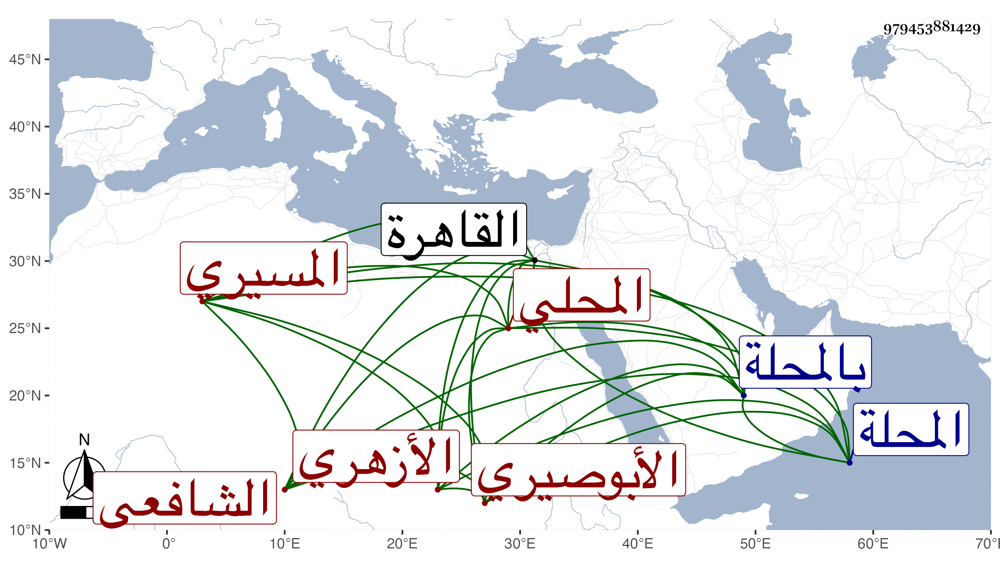

0902Sakhawi.DawLamic.ITO20230111-ara1.EIS1600.979453881429
Biography ID: 979453881429
403
أحمد بن محمد بن عثمن بن عمر الشهاب الأبوصيري المسيري الأصل المحلي ثم الأزهري الشافعي ويعرف بالمسيري . ولد في سنة إحدى وخمسين وثمانمائة تقريبا بالمحلة وقدم القاهرة فحفظ القرآن وأربعي النووي ومنهاجه وألفية النحو وغيرها وعرض على المناوي والبلقيني والأقصرائي في آخرين وأخذ عن البدر حسن الضرير ثم عن الشرف عبد الحق السنباطي والجوجري ولازم ابن قاسم في كتب كثيرة سردها والفخر المقسي والعبادي في آخرين وكان انتفاعه في الفقه بالمقسي وقرأ على السنهوري والشرف البر مكيني في التوضيح لابن هشام وسمع على العلاء الحصني في الكلام وكذا أخذ عن الديمي وكاتبه وتميز في فنون سيما الفقه وأقرأ بعض الطلبة بل صار ممن يقسم عليه وقرأ الحديث ببعض أماكن المحلة وصارت له وجاهة فيها وبين كثير من الفضلاء مع خير في الجملة ، وحج في سنة أربع وتسعين ثم في سنة ثمان وتسعين ورجع في كليهما وتكرر تردده إلي فيهما أيضا .
